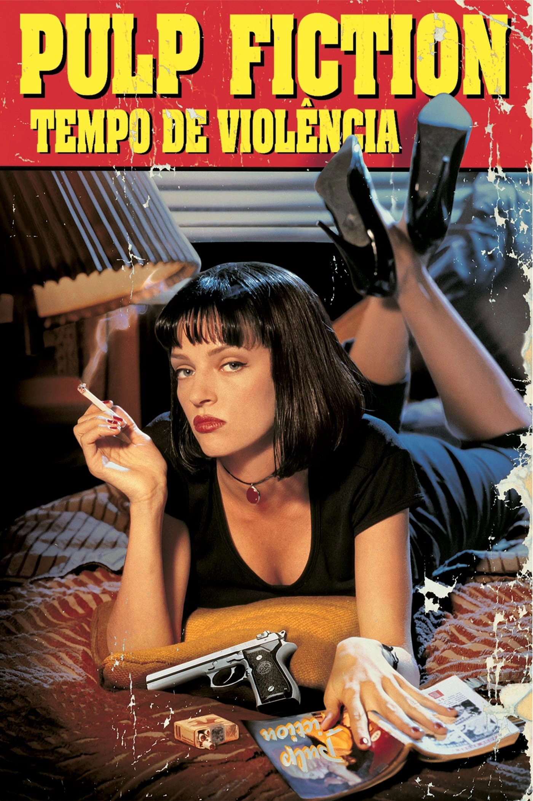
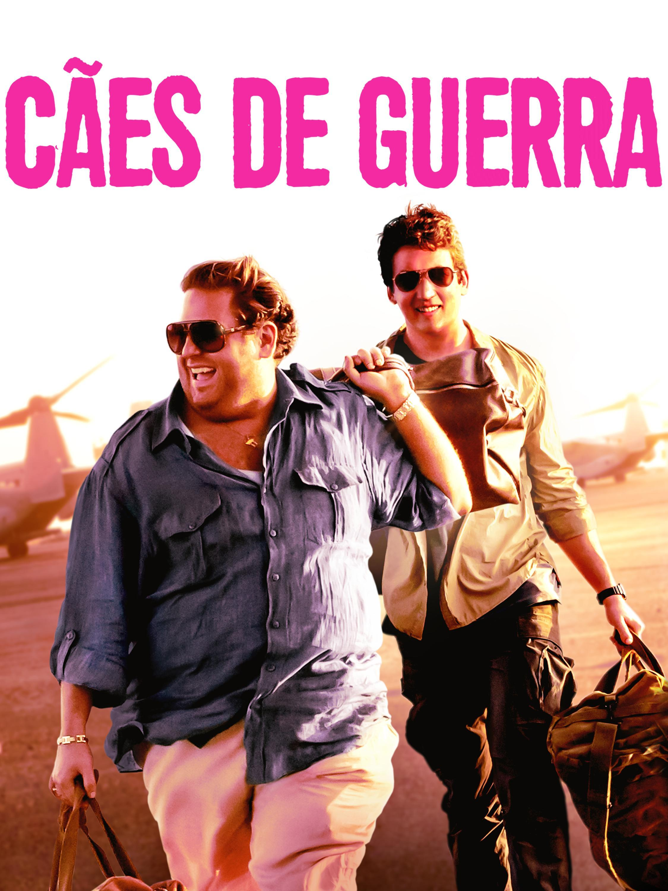

Pulp Fiction: Tempos de violência
Trailer
Assassino que trabalha para a máfia se apaixona pela esposa de seu chefe quando é convidado a acompanhá-la, um boxeador descumpre sua promessa de perder uma luta e um casal tenta um assalto que rapidamente sai do controle.
Scarface

Trailer
Após receber residência permanente nos Estados Unidos em troca do assassinato de um oficial do governo cubano, Tony Montana se torna o chefe do tráfico de drogas em Miami. Matando qualquer um que entre em seu caminho, Tony eventualmente se torna o maior traficante da Flórida, controlando quase toda a cocaína que entra em Miami. Porém, a pressão da polícia, as guerras com cartéis colombianos e sua própria paranoia servem para alimentar as chamas de sua eventual queda.
Cães de Guerra
Trailer
Em 2005, Efraim Diveroli e David Packouz, dois traficantes internacionais de armas, conseguem um contrato de 300 milhões de dólares para fornecer armamentos aos militares afegãos.